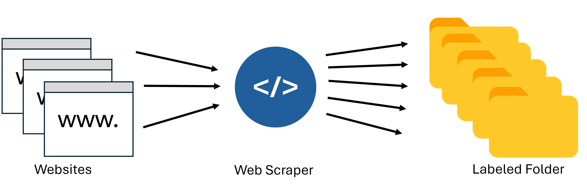

Data Report
All information on the data used in the Pokemon GO Battle Assistant project is compiled in this data report to ensure traceability and reproducibility of the results and to enable systematic expansion of the database.
The project utilizes three main data sources: Pokemon statistics and moves from the PvPoke rankings site, battle simulation data from the PvPoke battles site, and image datasets collected through the Python library duckduckgo_search. These raw datasets undergo preprocessing and feature engineering to create processed datasets suitable for machine learning model development.
Raw Data
Overview Raw Datasets
| Name | Source | Storage location |
|---|---|---|
| Pokemon Stats & Rankings | PvPoke.com CSV dataset | data_acquisition/processed_data/all_overall_rankings.csv |
| Battle Simulation Data | PvPoke.com Battle Simulator | data_acquisition/vectorized_data/battle_data_numeric.csv |
| Pokemon Image Dataset | DuckDuckGo Search API, PokémonDB, coloringpages101.com | data_acquisition/image_dataset/final_pokemon_dataset/ |
Note: The Pokemon Stats & Rankings dataset was subsequently vectorized and stored as all_overall_rankings_vectorized.csv in the data_acquisition/vectorized_data/ directory for machine learning model development.
Details Dataset 1: Pokemon Stats & Rankings
- Description: Contains comprehensive Pokemon statistics, battle performance metrics, movesets, and meta rankings for PvP battles
- Data source:
- Originally: PvPoke.com rankings page via web scraping
- Final source: Comprehensive CSV dataset from PvPoke.com with detailed Pokemon battle statistics
- Data procurement:
- Initial approach: Web scraping using Selenium WebDriver and BeautifulSoup
- Automated extraction of Pokemon attack/defense/stamina stats, fast moves, charged moves, and recommended movesets
- Scripts:
Poke_stats_Scraper.ipynb
- Final approach: Found a more comprehensive CSV dataset with detailed battle metrics and Pokemon parameters
- This dataset provided extensive information including Stat Product, CP, Level, Charged Move Counts, and Buddy Distance
- Initial approach: Web scraping using Selenium WebDriver and BeautifulSoup
- Legal aspects: Public data available for educational/research purposes
- Data governance: Public data, no personal information
- Variables: Pokemon name, Score, Pokedex number, Type 1 & 2, Attack, Defense, Stamina stats, Stat Product, CP, Fast Move, Charged Moves, Charged Move Counts, Buddy Distance, Charged Move Cost
Data Catalogue
| Column index | Column name | Datatype | Values (Range, validation rules) | Short description |
|---|---|---|---|---|
| 1 | Pokemon | String | Pokemon species names | Unique identifier for each Pokemon |
| 2 | Score | Float | 0-100 | Overall battle performance rating |
| 3 | Dex | Integer | 1-1000+ | Pokedex number identifier |
| 4 | Type 1 | String | Pokemon type name | Primary type of the Pokemon |
| 5 | Type 2 | String | Pokemon type name or “none” | Secondary type of the Pokemon (if any) |
| 6 | Attack | Float | 50-300 | Attack stat value |
| 7 | Defense | Float | 50-300 | Defense stat value |
| 8 | Stamina | Integer | 80-500 | HP/Stamina stat value |
| 9 | Stat Product | Integer | 1000000-3000000 | Combined stat product (Attack × Defense × Stamina) |
| 10 | Level | Float | 1-50 | Pokemon level for battle league |
| 11 | CP | Integer | 0-1500 | Combat Power value |
| 12 | Fast Move | String | Move names | Fast attack move for battle |
| 13 | Charged Move 1 | String | Move names | Primary charged attack move |
| 14 | Charged Move 2 | String | Move names | Secondary charged attack move |
| 15 | Charged Move 1 Count | Integer | 1-20+ | Energy requirement for Charged Move 1 |
| 16 | Charged Move 2 Count | Integer | 1-20+ | Energy requirement for Charged Move 2 |
| 17 | Buddy Distance | Integer | 1-20 | Walking distance (km) required as buddy |
| 18 | Charged Move Cost | Integer | 10000-100000 | Stardust cost to unlock second charged move |
Data Quality
- Completeness: 727 unique Pokemon entries with complete stat information in the final dataset
- Accuracy: Data validated against official game statistics
- Consistency: Standardized naming conventions and data formats
- Duplicates: No duplicates in the final dataset (originally found 2 duplicate entries - Clodsire, Golisopod)
Details Dataset 2: Battle Simulation Data
- Description: Contains vectorized numeric data from simulated 1v1 Pokemon battles for predicting battle outcomes
- Data source: PvPoke.com battle simulator combined with Pokemon statistics dataset
- Data procurement:
- Web scraping using Selenium WebDriver
- 20,000 battle scenarios simulated (generated using random sampling with Python’s random number generator)
- Legal aspects: Public simulation tool, data used for educational purposes
- Data governance: Public data, computational results from simulator
- Variables: Pokemon types, moves, stats, and battle outcomes (win/loss)
Data Catalogue
| Column index | Column name | Datatype | Values (Range, validation rules) | Short description |
|---|---|---|---|---|
| 1 | pokemon_winner | String | Pokemon species name | Winner Pokemon name |
| 2 | pokemon_loser | String | Pokemon species name | Loser Pokemon name |
| 3 | left_pokemon_type_1 | Integer | 0-17 | Primary type of left Pokemon (encoded) |
| 4 | left_pokemon_type_2 | Integer | 0-17 | Secondary type of left Pokemon (encoded) |
| 5 | left_pokemon_fast_move | Integer | Move ID | Fast move ID of left Pokemon |
| 6 | left_pokemon_charge_move_1 | Integer | Move ID | First charged move ID of left Pokemon |
| 7 | left_pokemon_charge_move_2 | Integer | Move ID | Second charged move ID of left Pokemon |
| 8 | left_pokemon_fast_move_type | Integer | 0-17 | Type of fast move for left Pokemon (encoded) |
| 9 | left_pokemon_charge_move_1_type | Integer | 0-17 | Type of first charged move for left Pokemon |
| 10 | left_pokemon_charge_move_2_type | Integer | 0-17 | Type of second charged move for left Pokemon |
| 11 | left_pokemon_dex | Integer | 1-1000+ | Pokedex number of left Pokemon |
| 12 | left_pokemon_attack | Float | 0.0-300.0 | Attack stat of left Pokemon |
| 13 | left_pokemon_defense | Float | 0.0-300.0 | Defense stat of left Pokemon |
| 14 | left_pokemon_stamina | Integer | 0-500 | Stamina stat of left Pokemon |
| 15 | left_pokemon_overall | Float | 0.0-100.0 | Overall performance rating of left Pokemon |
| 16 | right_pokemon_type_1 | Integer | 0-17 | Primary type of right Pokemon (encoded) |
| 17 | right_pokemon_type_2 | Integer | 0-17 | Secondary type of right Pokemon (encoded) |
| 18 | right_pokemon_fast_move | Integer | Move ID | Fast move ID of right Pokemon |
| 19 | right_pokemon_charge_move_1 | Integer | Move ID | First charged move ID of right Pokemon |
| 20 | right_pokemon_charge_move_2 | Integer | Move ID | Second charged move ID of right Pokemon |
| 21 | right_pokemon_fast_move_type | Integer | 0-17 | Type of fast move for right Pokemon (encoded) |
| 22 | right_pokemon_charge_move_1_type | Integer | 0-17 | Type of first charged move for right Pokemon |
| 23 | right_pokemon_charge_move_2_type | Integer | 0-17 | Type of second charged move for right Pokemon |
| 24 | right_pokemon_dex | Integer | 1-1000+ | Pokedex number of right Pokemon |
| 25 | right_pokemon_attack | Float | 0.0-300.0 | Attack stat of right Pokemon |
| 26 | right_pokemon_defense | Float | 0.0-300.0 | Defense stat of right Pokemon |
| 27 | right_pokemon_stamina | Integer | 0-500 | Stamina stat of right Pokemon |
| 28 | right_pokemon_overall | Float | 0.0-100.0 | Overall performance rating of right Pokemon |
| 29 | winner | Integer | 0 or 1 | Battle outcome (1 = left Pokemon wins, 0 = right) |
Data Quality
- Completeness: 20,000 battles with complete information for both Pokemon
- Balance: Near-equal distribution of win/loss outcomes for predictive modeling
- Consistency: All categorical variables consistently encoded using reference dictionaries
- Preprocessing: All features numerically encoded for direct use in machine learning models
Details Dataset 3: Pokemon Image Dataset
Dataset 3
Objective
Dataset 3 was created to build a diverse, high-quality, and robust Pokémon image dataset, suitable for applications in computer vision such as object detection, classification, and few-shot learning. The focus was on:
- Integrating multiple complementary data sources (official and unofficial)
- Removing duplicates using hash-based similarity checks
- Ensuring high data quality through manual and automated filtering
- Applying structured post-processing and dataset organization
Data Sources
The images were collected via custom Python scripts from three distinct sources

1. Official Sprites from PokémonDB
- Script:
scrape_official_sprites.py
- Up to 16 different sprite sets per Pokémon (e.g., red-blue, home, scarlet-violet)
- Shadow forms were excluded
- Stored in Pokémon-specific subfolders with SHA256-based filenames to prevent duplication
2. Coloring Pages from coloringpages101.com
- Script:
scrape_coloring_pages.py
- Automatically crawled category and detail pages using regular expressions and name normalization
- Downloaded all available PNG files into the corresponding Pokémon folders
- These black-and-white line drawings have clean, high-contrast edges — ideal for training models on shape or contour recognition
3. DuckDuckGo Image Search
- Script:
image_downloader_ddg.py
- Target: at least 30 visually distinct images per Pokémon
- Duplicate filtering:
- Byte-level: SHA256 hash
- Visual-level: Perceptual hash (phash) with Hamming distance ≤ 5
- Images were compressed and stored as JPEGs (quality = 50%) for storage efficiency
Post-Processing & Quality Assurance
Renaming with Perceptual Hash
- Script:
rename_images_by_hash.py
- All images renamed based on their perceptual hash
- Ensures uniqueness, removes duplicates, and enforces naming consistency
Manual Image Review & Cropping (Pokémon Cards)
- Tool:
image_review_gui.py(built with PyQt5)
- Desktop tool for manually inspecting, selecting, and cropping images
- Key use case: cropping Pokémon card images to isolate just the artwork and remove backgrounds or frames
- Features:
- Grid-based image preview (8 columns)
- Multi-selection and cropping (overwrite original files)
- Progress tracking with
done_folders.json - Dual-person workflow (folders are split between two users via a simple flag)
Dataset Splitting for Training
- Script:
split_train_test_dataset.py
- Automatically splits each Pokémon folder into an 80% training and 20% test set
- The split is performed randomly to ensure unbiased distribution of images
- Final structure reflects common deep learning pipelines
Directory Structure
The dataset is organized into a standard structure for supervised image classification. The root folder final_pokemon_dataset/ contains two subfolders: train/ and test/, representing an 80:20 split.
project_root/
├── final_pokemon_dataset/
│ ├── train/
│ │ └── Abomasnow/
│ │ └── Electabuzz/
│ │ └── Totodile/
│ │ ...
│ └── test/
│ └── Abomasnow/
│ └── Electabuzz/
│ └── Totodile/
│ ...Processed Data
Overview Processed Datasets
| Name | Source | Storage location |
|---|---|---|
| Vectorized Pokemon Dataset | Pokemon Stats & Rankings | data_acquisition/vectorized_data/all_overall_rankings_vectorized.csv |
| Battle Outcome Dataset | Battle Simulation Data | data_acquisition/vectorized_data/battle_data_numeric.csv |
| Image Training Dataset | Pokemon Image Dataset | data_acquisition/image_dataset/final_pokemon_dataset/ |
Details Processed Dataset 1: Vectorized Pokemon Dataset
- Description: Vectorized version of the Pokemon Stats & Rankings dataset for machine learning applications
- Processing steps:
- Removal of duplicate entries
- Vectorization of categorical features (Pokemon types, moves)
- Feature engineering: type effectiveness calculations, stat ratios, move type diversity
- Encoding of categorical variables using numerical mapping dictionaries
- Normalization of numerical features
- Preparation for model input
- Vectorization process:
- Categorical features converted to numerical representations using mapping dictionaries
- Types, fast moves, and charged moves encoded using dedicated mapping files:
data_acquisition/dictionarie/type_to_number.csvdata_acquisition/dictionarie/fast_move_to_number.csvdata_acquisition/dictionarie/charged_move_to_number.csv
- Vectorization performed in
pokemon_vectorization.ipynb
- Access method: CSV file accessible via pandas DataFrame loading
Data Catalogue
- Vectorized feature set with all categorical variables converted to numerical representations
- Standardized numerical ranges for model compatibility
- Preserves all information from the original dataset in machine learning-ready format
Details Processed Dataset 2: Battle Outcome Dataset
- Description: The battle_data_numeric.csv dataset is already processed and ready for machine learning
- Processing steps:
- Categorical variables (Pokemon types, moves) numerically encoded using reference dictionaries
- Feature pairing to represent both Pokemon in each battle scenario
- Balancing of win/loss outcomes for unbiased model training
- Normalization of numerical features where appropriate
- Access method: Structured CSV with all features in numeric format, directly suitable for ML model training